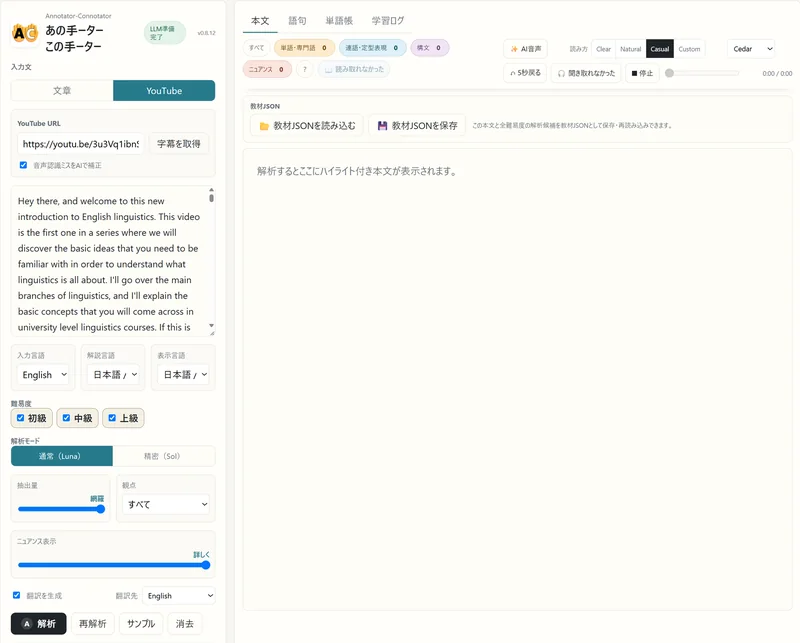
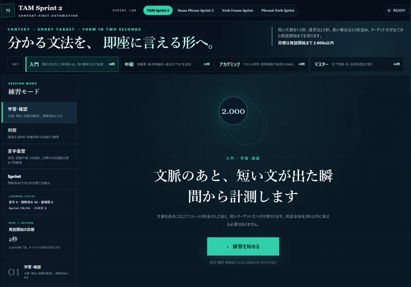
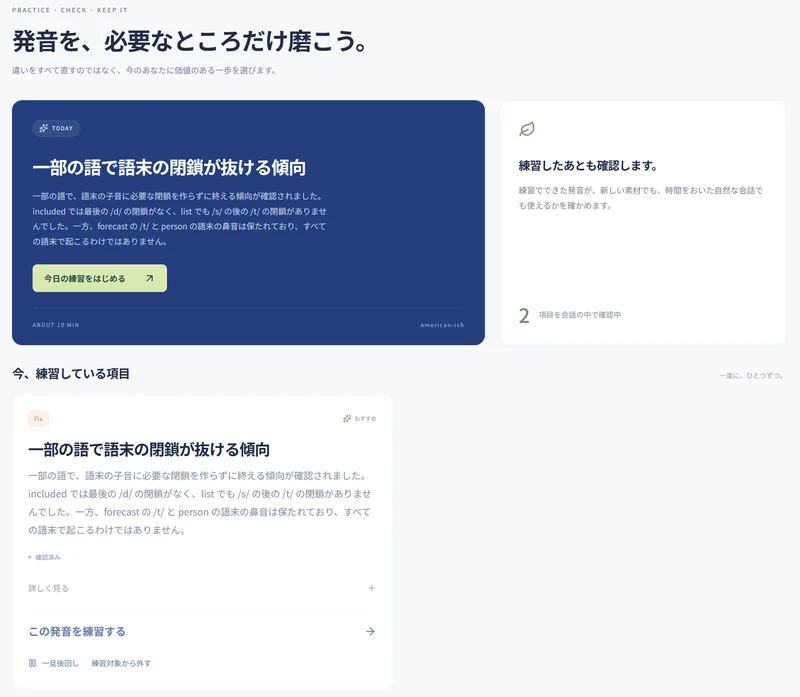
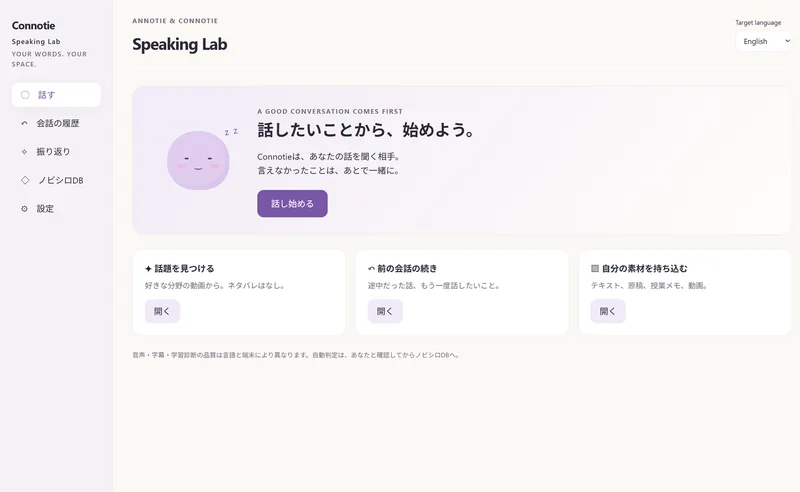

通じる部分にも、
磨けるところがある。
多少間違っていても伝わる発音や動詞の使い方、ニュアンス。見過ごされやすい部分まで、AIが学習をサポートします。
A LITTLE FURTHER. A LOT MORE YOU.
知っている。けれど、とっさに使えない。
そんなノビシロを、AIと見つけて鍛える。
中級から上級を目指す、4つの語学学習アプリ。
あなたの興味と、あなたに必要な練習から。
開発中のアプリを紹介するプレビューページです
「もっと詳しく調べてみよう」と提案したい。
I suggest _____
a closer look.
知っている表現を、とっさに選べる形へ。
学習体験を伝える説明用デモです。AI解析・録音は行いません。
THE NEXT LEVEL IS PERSONAL.
会話はできる。内容もわかる。
でも、発音や語法、細かなニュアンスには、
まだしっくりこないところがある。
必要なのは、すべてを学び直すことではなく、
その小さな差に気づき、使える形にする練習です。
もっと難しく、よりも。
もっと、自分のものに。
多少間違っていても伝わる発音や動詞の使い方、ニュアンス。見過ごされやすい部分まで、AIが学習をサポートします。
説明を読めばわかる。答えを見れば思い出す。そこから、会話の中でも取り出せるようにするための反復と実践へ。
全員に同じ課題を課すのではなく、自分の発話やつまずきを手がかりに、今の自分に必要な練習を選びます。
気になる動画、趣味の記事、仕事の専門分野。「知りたい」「話したい」と思える内容から、理解と会話を広げます。
FOUR LABS. YOUR WAY.
読む・聞く、語法、発音、会話。
それぞれの得意分野で、あなたの学びを支える。
まずは、今いちばん気になるLabから。
好きな文章を、
奥行きのある教材に。
文章やYouTube字幕から、語彙・構文だけでなく、言外の意味やことばの響きまで。わからないところを、文脈の中で理解する。

わかっている文法を、
とっさの一言に。
時制、冠詞、動詞に続く形、句動詞。「考えればわかる」を、意味や文脈からすばやく取り出すための短い練習に。

通じる発音にも、
自分だけのノビシロがある。
自分の音声から改善候補を探し、本当に練習が必要かを確認。一度にひとつの焦点で、練習中だけでなく自然な会話での定着を目指す。

話したいことを話す。
そこから、次が見つかる。
AIのConnotieと、自分主導の会話。言えなかったことや気になった箇所を振り返り、納得したノビシロを残して、もう一度使ってみる。

掲載画像は、2026年9月24日にChromeで撮影した開発中アプリの実画面です。画像を選ぶと拡大できます。機能・表示・対応言語はアプリごとに異なり、今後変更される場合があります。
START WHERE YOU ARE.
ゴールを全部決めなくても大丈夫。
気になることをひとつ選ぶと、
最初のLabが見えてきます。
YOUR STARTING POINT
まずは、話してみる。
自分の好きな話題で会話して、言いたかったのに言えなかったことを振り返る。AIの提案を自分で確かめ、納得したノビシロを残せます。
選んだ関心に合わせた案内です。語学力の診断ではありません。
FOLLOW YOUR CURIOSITY.
たとえば、気になる動画を1本。
「もっと知りたい」を「自分も話せる」に変えていく。
こんな学び方もできます。
文章や字幕の意味、言い回し、ニュアンスを確かめる。翻訳や音声も理解の助けに。
Annotator-Connotator理解した内容について、自分の意見や経験を話す。「ここが言えなかった」に気づく。
Speaking Lab語法が出てこなければSprintへ。発音を磨きたければPronunciationへ。課題に合う練習を選ぶ。
覚えたことを、また会話で使ってみる。練習でできたことを、いつもの自分の言葉へ。
Speaking Labこれは使い方の一例です。どのLabから始めても、ひとつだけ使っても。アプリ間の自動連携を前提とした手順ではありません。
A FEW MORE THINGS.
できることも、
まだ途中のことも。
基本的な内容は理解でき、ある程度やり取りもできるけれど、より正確に、自然に、自分の考えを表現したい人を主な対象にしています。特に「ルールは知っているのに会話では使えない」「伝わるので、そのままになっている課題がある」という中級〜上級の学習者を想定しています。
初歩の体系的な学習や、資格試験の得点を保証するサービスではありません。
ありません。好きな文章を読みたい、発音だけを磨きたい、会話の機会がほしいなど、それぞれ単独で使うことを想定しています。必要になったときに、別のLabを組み合わせられます。
一部に書き出し・読み込みの機能がありますが、共通アカウントや全アプリの自動同期が完成しているわけではありません。
対応範囲はアプリによって異なります。Annotator-Connotatorは複数言語の文章・解説に対応しています。Speaking Labにも言語別の設定がありますが、言語ごとに試用・未検証の範囲を含みます。
Sprint LabとPronunciation Labは、現在の実装では英語が中心です。4つすべてが同じ言語・同じ品質で対応しているという意味ではありません。
いいえ。AIの解説や音声判断には誤りがあり得ます。学習者が元の発話や文脈を確認できること、根拠が足りなければ判断を保留することを重視しています。
また、発音や表現の違いがすべて誤りとは限りません。Pronunciation Labでは正当なバリエーションと改善が必要な点を区別します。ネイティブと同一になることを一律のゴールにはしません。
このLPのミニデモとLab案内は、ブラウザ内だけで動きます。マイクを使用せず、入力内容をAIに送信しません。独自のアクセス解析や広告用トラッキング、登録フォームも設置していません。配信元のサーバーが通常のアクセスログを保存する場合はあります。
アプリ本体は別です。AIへのテキスト・音声送信や保存方法は、それぞれのアプリの利用時の説明を確認してください。
4つのLabは、現在も開発・検証を続けています。
一般向けの公開URL・利用料金・開始時期は、このページではまだ案内していません。
いまは、機能とコンセプトをご覧いただけるプレビューです。
Annotator-Connotatorの紹介ページ （新しいタブで開きます）{kind=link}
{kind=link}
{kind=link}
{kind=link}